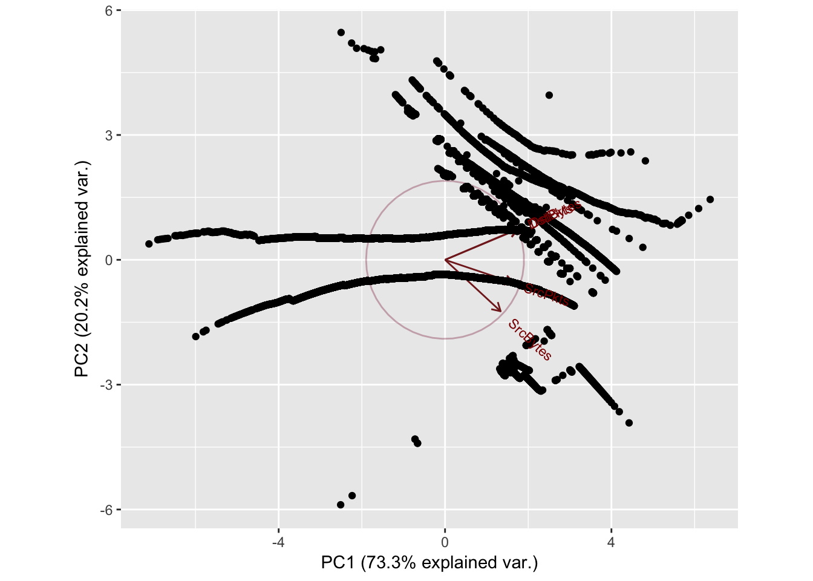
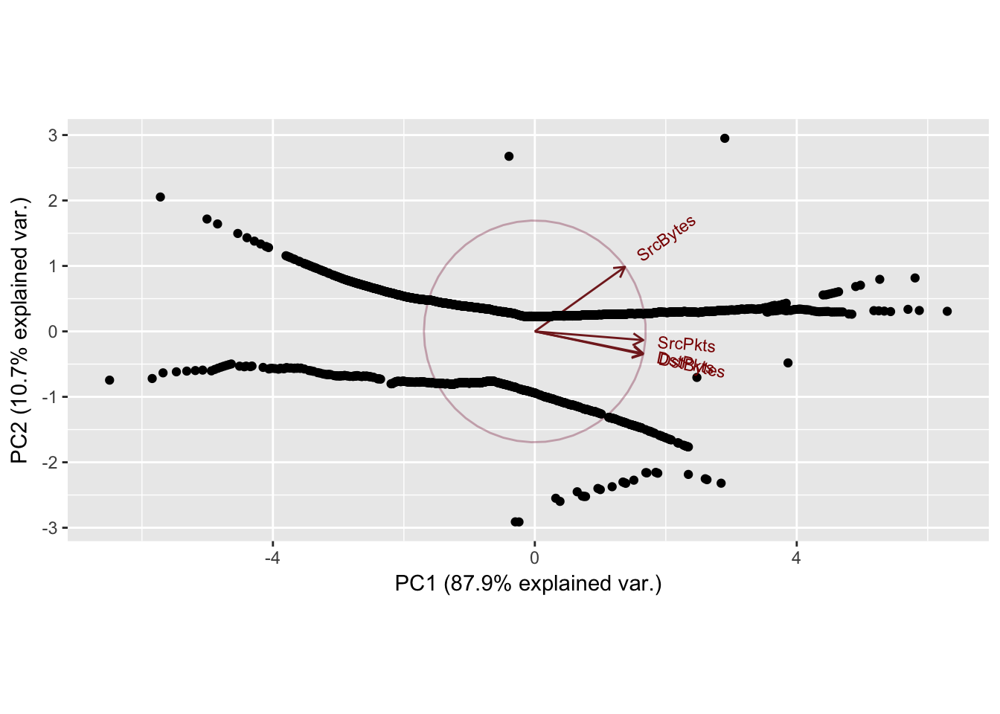
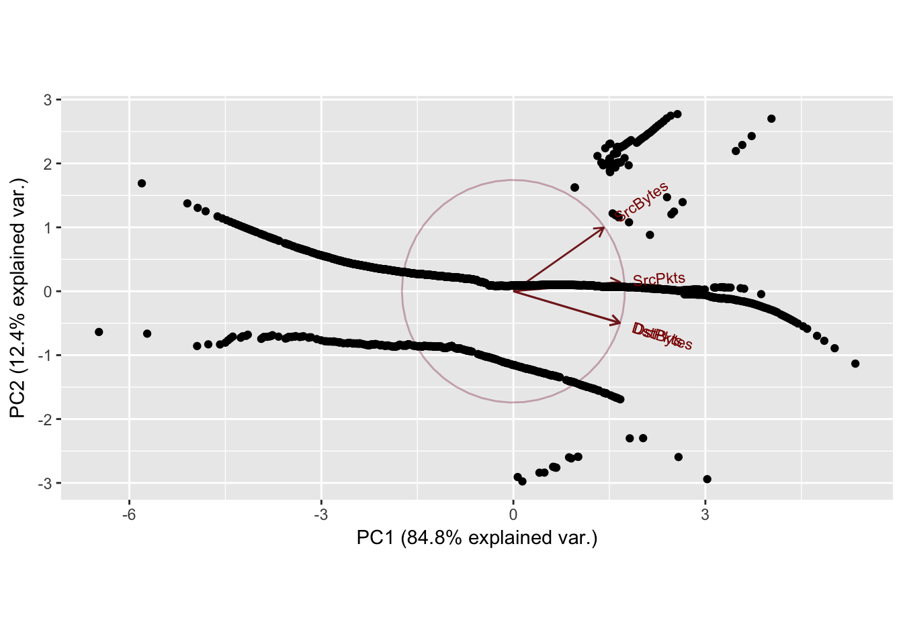
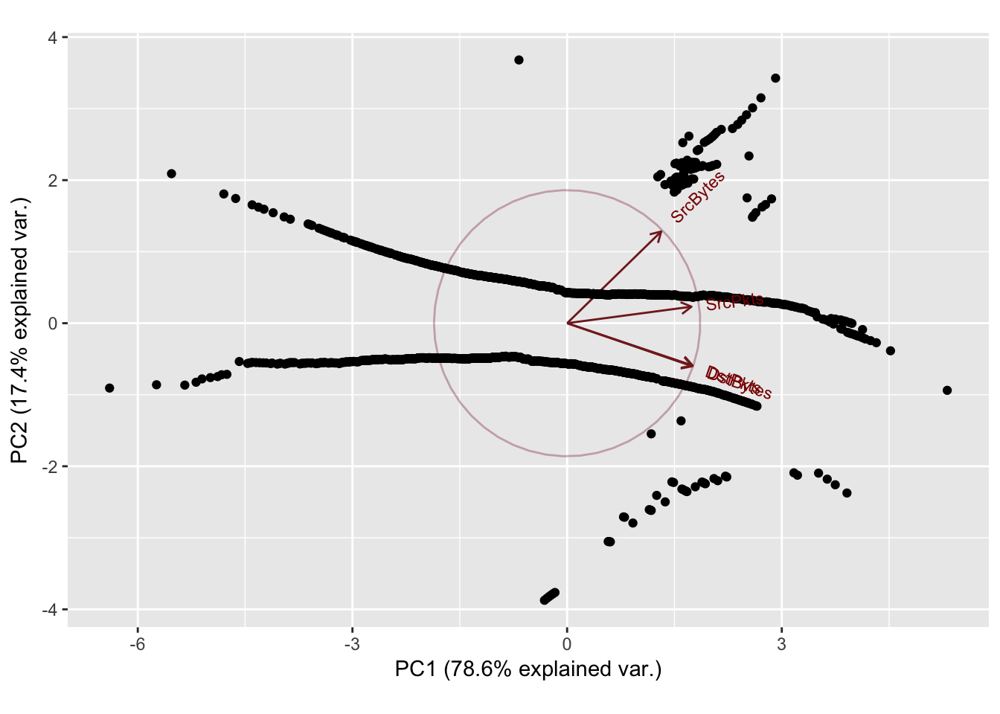
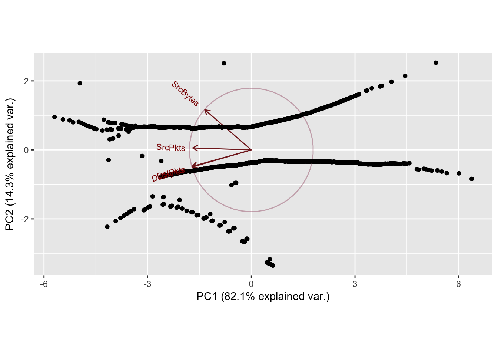
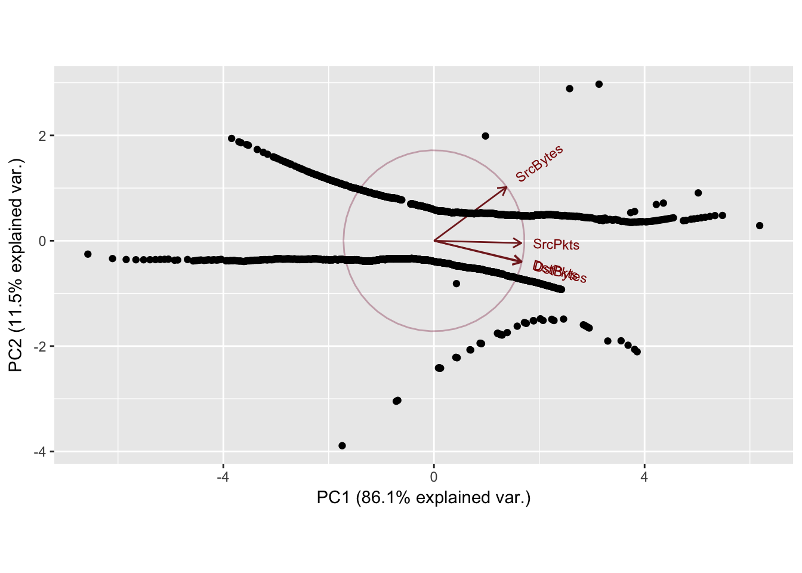
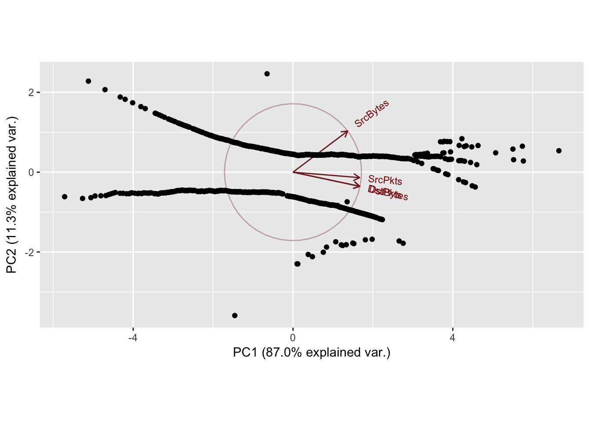
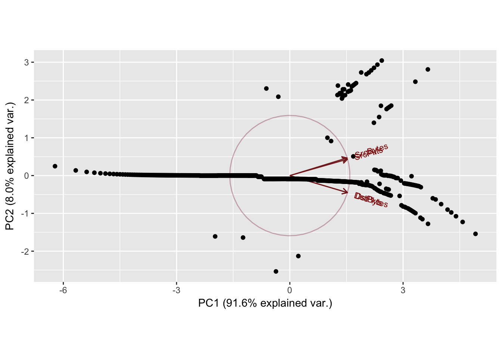
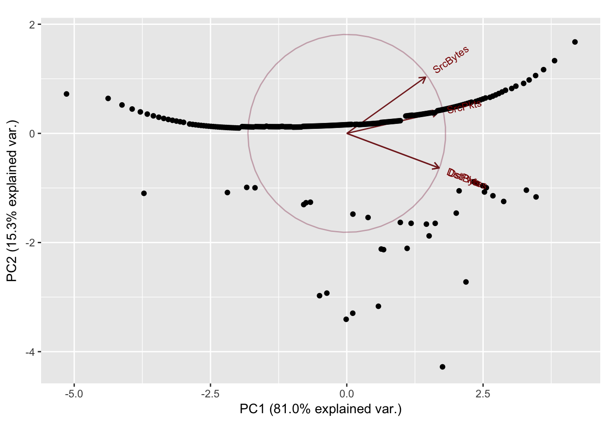

Chapter 5 Investigating Combinations
combo_num = 10
for (i in 1:combo_num){
combo_table = combinations[i]
combo_table = transform(combo_table,
SrcBytes = as.numeric(SrcBytes),
SrcPkts = as.numeric(SrcPkts),
DstBytes = as.numeric(DstBytes),
DstPkts = as.numeric(DstPkts))
cat("Sport:", combo_table$Sport[1],"\t")
cat("Dport:", combo_table$Dport[1],"\n")
SrcBytes_norm = nscore(combo_table$SrcBytes)$nscore
SrcPkts_norm = nscore(combo_table$SrcPkts)$nscore
DstBytes_norm = nscore(combo_table$DstBytes)$nscore
DstPkts_norm = nscore(combo_table$DstPkts)$nscore
pca_analysis(SrcBytes_norm, SrcPkts_norm, DstBytes_norm, DstPkts_norm)
}Sport: 32416 Dport: 9163
PC1 PC2 PC3 PC4
SrcBytes 0.4113308 -0.7246604 -0.5528760 0.001575730
SrcPkts 0.5054262 -0.3234250 0.7999554 0.003459252
DstBytes 0.5357591 0.4327433 -0.1665939 0.705649994
DstPkts 0.5369483 0.4277813 -0.1632360 -0.708550377
Importance of components:
PC1 PC2 PC3 PC4
Standard deviation 1.7118 0.8991 0.51065 0.02309
Proportion of Variance 0.7326 0.2021 0.06519 0.00013
Cumulative Proportion 0.7326 0.9347 0.99987 1.00000
Sport: 4145 Dport: 9119
PC1 PC2 PC3 PC4
SrcBytes 0.4333309 0.8902089 -0.1405308 0.001886624
SrcPkts 0.5213529 -0.1206221 0.8439979 0.036180840
DstBytes 0.5190742 -0.3165495 -0.3953966 0.688490995
DstPkts 0.5205549 -0.3045896 -0.3340362 -0.724339380
Importance of components:
PC1 PC2 PC3 PC4
Standard deviation 1.875 0.6538 0.23124 0.05551
Proportion of Variance 0.879 0.1069 0.01337 0.00077
Cumulative Proportion 0.879 0.9859 0.99923 1.00000
Sport: 19239 Dport: 9153
PC1 PC2 PC3 PC4
SrcBytes 0.4400190 0.8125062 -0.3823817 -0.001104223
SrcPkts 0.5189497 0.1174251 0.8466938 -0.003489750
DstBytes 0.5179403 -0.4057384 -0.2640886 -0.705245607
DstPkts 0.5184712 -0.4017728 -0.2591352 0.708953621
Importance of components:
PC1 PC2 PC3 PC4
Standard deviation 1.8418 0.7037 0.33316 0.03695
Proportion of Variance 0.8481 0.1238 0.02775 0.00034
Cumulative Proportion 0.8481 0.9719 0.99966 1.00000
Sport: 4243 Dport: 27
PC1 PC2 PC3 PC4
SrcBytes 0.3986539 0.8262979 -0.3978739 0.001762539
SrcPkts 0.5268775 0.1487193 0.8367993 0.007045781
DstBytes 0.5300998 -0.3876467 -0.2708012 0.703840168
DstPkts 0.5314785 -0.3805842 -0.2610173 -0.710321243
Importance of components:
PC1 PC2 PC3 PC4
Standard deviation 1.7727 0.8343 0.40033 0.03406
Proportion of Variance 0.7856 0.1740 0.04007 0.00029
Cumulative Proportion 0.7856 0.9596 0.99971 1.00000
Sport: 4243 Dport: 10290
PC1 PC2 PC3 PC4
SrcBytes -0.4146349 0.86007431 -0.2972268 -0.002501828
SrcPkts -0.5225073 0.04229265 0.8514240 -0.016572825
DstBytes -0.5257892 -0.36545098 -0.3181251 -0.699133556
DstPkts -0.5278350 -0.35345310 -0.2924547 0.714794623
Importance of components:
PC1 PC2 PC3 PC4
Standard deviation 1.8125 0.7560 0.37528 0.05022
Proportion of Variance 0.8213 0.1429 0.03521 0.00063
Cumulative Proportion 0.8213 0.9642 0.99937 1.00000
Sport: 4243 Dport: 26
PC1 PC2 PC3 PC4
SrcBytes 0.4320683 0.87332152 -0.2249932 0.002131619
SrcPkts 0.5202875 -0.03769203 0.8529953 0.016712305
DstBytes 0.5202102 -0.34831316 -0.3463831 0.698625865
DstPkts 0.5215355 -0.33847715 -0.3190547 -0.715288791
Importance of components:
PC1 PC2 PC3 PC4
Standard deviation 1.8559 0.6797 0.30326 0.0398
Proportion of Variance 0.8611 0.1155 0.02299 0.0004
Cumulative Proportion 0.8611 0.9766 0.99960 1.0000
Sport: 4243 Dport: 25
PC1 PC2 PC3 PC4
SrcBytes 0.4278586 0.8931432 -0.1386797 -0.0005117289
SrcPkts 0.5214493 -0.1186010 0.8449812 -0.0055942005
DstBytes 0.5218835 -0.3078511 -0.3699338 -0.7042828114
DstPkts 0.5221736 -0.3057071 -0.3604494 0.7098972916
Importance of components:
PC1 PC2 PC3 PC4
Standard deviation 1.8651 0.6736 0.25860 0.02853
Proportion of Variance 0.8697 0.1134 0.01672 0.00020
Cumulative Proportion 0.8697 0.9831 0.99980 1.00000
Sport: 4243 Dport: 10282
PC1 PC2 PC3 PC4
SrcBytes 0.3952127 0.8082469 -0.4365116 0.001226653
SrcPkts 0.5292182 0.1880550 0.8273666 0.005281099
DstBytes 0.5303470 -0.3972687 -0.2534339 0.704755906
DstPkts 0.5314763 -0.3918544 -0.2463602 -0.709429149
Importance of components:
PC1 PC2 PC3 PC4
Standard deviation 1.7608 0.8629 0.39223 0.03300
Proportion of Variance 0.7751 0.1862 0.03846 0.00027
Cumulative Proportion 0.7751 0.9613 0.99973 1.00000
Sport: 19581 Dport: 118
PC1 PC2 PC3 PC4
SrcBytes 0.4978768 0.5190781 -0.69474927 0.0003069068
SrcPkts 0.5010460 0.4817043 0.71896568 -0.0014778396
DstBytes 0.5004716 -0.4999998 -0.01523225 -0.7066090712
DstPkts 0.5005994 -0.4985169 -0.01340796 0.7076025312
Importance of components:
PC1 PC2 PC3 PC4
Standard deviation 1.9145 0.56579 0.10402 0.06249
Proportion of Variance 0.9163 0.08003 0.00271 0.00098
Cumulative Proportion 0.9163 0.99632 0.99902 1.00000
Sport: 35506 Dport: 12
PC1 PC2 PC3 PC4
SrcBytes 0.4432713 0.7265363 0.5248198 -0.01482290
SrcPkts 0.5148990 0.2730712 -0.8122575 0.02343025
DstBytes 0.5185367 -0.4458439 0.1990667 0.70193688
DstPkts 0.5191429 -0.4458702 0.1586646 -0.71169932
Importance of components:
PC1 PC2 PC3 PC4
Standard deviation 1.80 0.7830 0.38006 0.05046
Proportion of Variance 0.81 0.1533 0.03611 0.00064
Cumulative Proportion 0.81 0.9633 0.99936 1.00000
Zeroes in the dataset causing the patterns in the 2nd principal component. Normal scores dont work very well if there are ties in the data.
5.1 Matrix Completion via Singular Value Decomposition
There are \(m\) source ports and \(n\) destination ports. \(Y \in {\rm I\!R}^{m \times n}\), is the matrix that stores the means of the combinations of source ports and destination ports. \(Y\) has a lot of missingness because not every source port interacts with every destination port. \(F \in {\rm I\!R}^{m \times n}\) is a sparse matrix that represents the frequencies of combinations, i.e \(F[32242,12312]\) represents the number of observations for the 32242 12312 port interaction. \(M \in {\rm I\!R}^{m \times n}\) represents a boolean matrix of whether the corresponding \(Y\) values are missing. \(Y[M]\) represents all of the missing values of \(Y\).
There are multiple steps to the matrix completion process: Impute the initial values for the missing \(y_{i,j}\) observations \(1 \leq i \leq m, 1 \leq j \leq n\): In general an additive model is applicable: \[y_{i,j} = \mu + a_i + b_j + \epsilon_{i,j}\] where \(\epsilon \in N(0,\sigma^2)\), \(\mu\) is the overall mean, \(a_i\) is the row mean, and \(b_j\) is column mean. An analysis of variance (ANOVA) imputation is used to fill in the initial values, \(y_{i,j}\). Ignoring the missing values for now, let \(y_{..}\) denote the empirical overall mean, \(y_{i.}\) denote the empirical row mean, and \(y_{.j}\) denote the column mean. \[y_{i,j} = y_{..} + (y_{i.}-y{..}) + (y_{.j}-y_{..}) = y_{i.} + y_{.j} - y{..}\]
The repeated imputation procedure solves \(Y^{(s)}[M] = R_k(Y^{(s-1)})[M]\) where \(R_k\) is the best rank-k approximation for the \(s\)-th step. For each step \((s)\) use singular value decomposition to decompose \[Y^{(s)} = U^{(s)}DV^{T(s)}\] where \(D\) is a diagonal matrix of the singular values, \(U\) is the left singular vectors of \(Y\) and \(V\) is the right singular vectors of \(Y\).
The Eckart-Young-Mirsky (EYM) Theorem provides the best rank-k approximation for the missing values in \(Y^{(s+1)}\). Recall \(Y[M]\) represents all of the missing values of \(Y\). Applying the EYM theorem: \[Y^{(s+1)}[M] = (U[,1:k]^{(s)}D[,1:k]V[,1:k]^{T(s)})[M]\]. Eliminate (s), (s+1)
Where \(U[,1:k]\) represents the first \(k\) columns of \(U\).
The EYM rank approximation is repeated until the relative difference between \(Y^{(s+1)}\) and \(Y^{(s)}\) falls below a set threshold, \(T\). The relative difference threshold is expressed: \[\|Y^{(s+1)}-Y^{(s)}\|_2 < T\] divide by current value of Y^({s}). Make criteria invariate to a scale change, multiplyng by 20 doesnt change convergence criteria. Frobenius norm? L2 norm?
To assess the quality of the imputation, Leave-One-Out Cross Validation (LOOCV) is used to generate a prediction error. LOOCV requires taking an observed value, setting it to NA (missing), and then performing the described imputation process. The prediction error can then be calculated as some function of the difference between the imputed value and the true value, \(\hat y_{i,j} - y_{i,j}\).
Least squares estimate with gaussian error model, for the same variance assumption between cells.
What would a good statistical model be for variable frequency
AMMI Model, \[y_{ijk}`sim .mu + a_i + b_j + u_i^TDv_j+\sigma_{ij}\epsilon_{ij}\] epsilon is standard normal so it turns the whole term to having variance i,j
#matrix parameters
n_Sport = 20
n_Dport = 20
#get freqs
Sport_table = as.data.frame(table(argus$Sport))
Sport_table = Sport_table[order(-Sport_table$Freq),]
top_Sport = (head(Sport_table$Var1, n_Sport))
#get freqs
Dport_table = as.data.frame(table(argus$Dport))
Dport_table = Dport_table[order(-Dport_table$Freq),]
top_Dport = (head(Dport_table$Var1, n_Dport))
#create starting matrices
ports_combo_matrix = matrix(list(), nrow = n_Sport, ncol = n_Dport)
dimnames(ports_combo_matrix) = list(top_Sport, top_Dport)
ports_freq_matrix = matrix(0, nrow = n_Sport, ncol = n_Dport)
dimnames(ports_freq_matrix) = list(top_Sport, top_Dport)
nscore = function(x) {
nscore = qqnorm(x, plot.it = FALSE)$x # normal score
trn.table = data.frame(x=sort(x),nscore=sort(nscore))
return (list(nscore=nscore, trn.table=trn.table))
}
#fill the ports_combo_matrix and ports_freq_matrix
for (s in 1:n_Sport){
for (d in 1:n_Dport){
combination = argus[is.element(argus$Sport, top_Sport[s])
& is.element(argus$Dport, top_Dport[d]),]
obs = combination$SrcBytes
n_obs = length(obs) #ignores NA values
if (n_obs > 0){
#obs = nscore(obs)$nscore #normal transformation
for (i in 1:n_obs){
ports_combo_matrix[[s,d]] = c(ports_combo_matrix[[s,d]],obs[i])
#O(1) time to append values to a list?
ports_freq_matrix[s,d] = ports_freq_matrix[s,d] + 1
}
}
}
}
#create mean and variance matrix
ports_mean_matrix = matrix(NA, nrow = n_Sport, ncol = n_Dport)
dimnames(ports_mean_matrix) = list(top_Sport, top_Dport)
ports_variance_matrix = matrix(NA, nrow = n_Sport, ncol = n_Dport)
dimnames(ports_variance_matrix) = list(top_Sport, top_Dport)
#fill mean and variance matrix
for (s in 1:n_Sport){
for (d in 1:n_Dport){
if (ports_freq_matrix[s,d] == 1){
ports_mean_matrix[s,d] = ports_combo_matrix[[s,d]]
ports_variance_matrix[s,d] = 0
}
else if (ports_freq_matrix[s,d] > 1){
ports_mean_matrix[s,d] = mean(ports_combo_matrix[[s,d]])
ports_variance_matrix[s,d] = var(ports_combo_matrix[[s,d]])
}
}
}
#untuned ALS using softimpute
fit = softImpute(ports_mean_matrix,rank.max=2,lambda=0.9,trace=TRUE,type="als")
fit$d
filled = complete(ports_mean_matrix, fit)
plot(ports_mean_matrix[!is.na(ports_mean_matrix)], filled[!is.na(ports_mean_matrix)])
plot(ports_mean_matrix[!is.na(ports_mean_matrix)], filled[!is.na(ports_mean_matrix)],
xlim = c(0,5000), ylim = c(0,5000))
####Eckhart Young Theorem Implementation, Best Rank k Approximation####
S = 1000
k = 2
Y = ports_mean_matrix
#calculate overall mean
n = 0
sum = 0
for (s in 1:n_Sport){
for (d in 1:n_Dport){
if (ports_freq_matrix[s,d] != 0){
sum = sum + ports_mean_matrix[s,d]
n = n + ports_freq_matrix[s,d]
}
}
}
overall_mean = sum/n
#calculate row means and col means
row_means = rowMeans(ports_mean_matrix, na.rm = TRUE)
col_means = colMeans(ports_mean_matrix, na.rm = TRUE)
#Fill in missing values in Y with ANOVA
for (s in 1:n_Sport){
for (d in 1:n_Dport){
if (ports_freq_matrix[s,d] == 0){
Y[s,d] = row_means[s] + col_means[d] - overall_mean
}
}
}
for (i in 1:S){
#extract SVD
svd_Y = svd(Y)
D = diag(svd_Y$d)
U = svd_Y$u
V = svd_Y$v
#EYM theorem
EYM = U[,1:k] %*% D[,1:k] %*% V[,1:k]
#replace imputed values with new values
for (s in 1:n_Sport){
for (d in 1:n_Dport){
if (ports_freq_matrix[s,d] == 0){
Y[s,d] = EYM[s,d]
}
}
}
}–>
–>
–>
–>